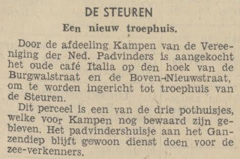

Burgwalstraat
De eerste oproep voor een padvindersgroep in Kampen verschijnt in de Kamper Courant op 3 november 1912. Een jaar later wordt Padvinders Groep 1 Kampen opgericht. In 1931 openen zij een “troepenhuis”, in 1938 een nieuwe hier in de Burgwalstraat. Er zijn dan twee locaties voor de padvinders: hier in de binnenstad maar ook aan de kolk bij Seveningen.

Krantknipsel met nieuwsbericht over aankoop van het pand